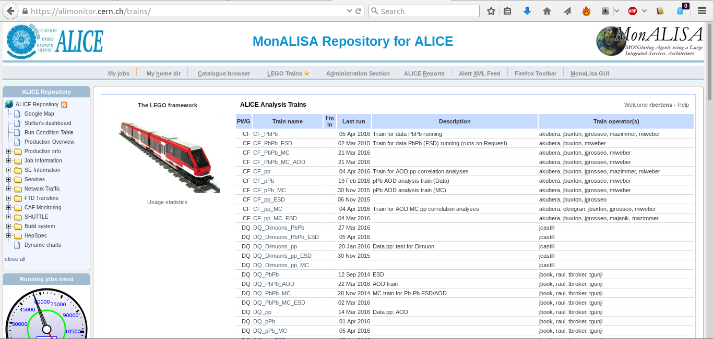

The LEGO train system
By now, your code is running well on Grid, you're submitting and merging jobs like a seasoned professional. However, do you really want to
- Stay up all night to resubmit jobs?
- Risk losing your code because it's not part of AliPhysics and your hard drive crashes?
To avoid these headaches, users are encouraged to run their jobs in a more automated and efficient way by using the LEGO framework.
Why LEGO trains are crucial
A train can easily contain multiple instances of your analysis, meaning you can run your default configuration and in addition multiple cut variations and other cross-checks. The success rate of the jobs is EXACTLY the same for each of your configurations, as they are all handled in parallel. This means that the all the configurations handle the exact same set of data.
This is in contrast to submitting your jobs one after each other (possibly running into quota problems) and having random job crashes, resulting in a situation where your default configuration and the variations did not handle exactly the same set of data.
How does it work
The LEGO framework is a tool to run and manage analysis trains on AliEn. It builds on existing infrastructure, the analysis framework, MonALISA and LPM. LEGO provides a web interface for users and operators which allows to:
- register train wagons
- configure trains (handlers, wagons, input datasets, global Variables)
- test the wagons and the train in a well-defined environment
- study the test results
- submit the train to the Grid
- study the resource consumption of the train for each wagon (CPU usage, virtual and resident memory)
Note
The fact that the trains run on the Grid, requires that all code is contained in an AliEn package. Therefore, the train uses the regularly deployed AliPhysics "AN" tags, so you will have to make sure that your analysis code is available in AliPhysics.
Within AliPhysics, your analysis code will be part of a shared library that contains many other analyses from your working group or analysis group. If you have never added a class to AliPhysics, ask your PWG or PAG coordinators for help.
How to access the LEGO train system
The LEGO train system can be accessed via (https://alimonitor.cern.ch/trains/)

By clicking on the top right 'help' tab, you will be guided to a webpage where it is explained in detail how you can join a LEGO train and perform a highly efficient analysis.
Join the LEGO trains!
Everyone is encouraged to use the LEGO train system for running analysis rather than running analysis by yourself on Grid. Not only will you benefit yourself, but by running trains that contain analyses of multiple users in one go, we conserve resources: the LEGO train has to only run on instance of AliPhysics to perform multiple analyses, and it has to only retrieve the input data once.
As a consequence: LEGO train jobs have higher priority in the job queues than user jobs! Furthermore, your analysis will always be reproducible, and you will receive a simple mail with a link to your final output file when your train run is done. So if you want to perform fast, safe, and efficient analysis: use the LEGO trains!
How to add your analysis task to the LEGO train system
As seen in the screenshot above, the train pages are grouped by PWG, collision system, and AOD or ESD data processing. Once you are in the correct train page:
- Click Add new wagon
- Configure the wagon by either setting it up from scratch, or copying it from an existing wagon(available under advanced settings, and allows in addition to not only copy your own wagons, but also from any other user!)
- Check that your macro is defined and configured correctly in the basic settings tab
- Check the dependencies (if your dependency is not available you can just create another wagon and configure it accordingly then define it as a dependency for your own wagon)
- Use a unique filename for your wagon
- Expert mode: Add subwagons (easiest way to run multiple analysis with a single wagon)
- Activate your wagon for the dataset you want to process (if it is not available, ask an operator to add it)
- Check the runlist of the dataset! (Do not blindly use the runlists which happen to be there, make sure proper QA is done such that only high quality runs are used for your analysis)
- Ask the train operators to start a train test for your activated wagons (each PAG and/or PWG has a different system, please ask the coordinators)
- Check that the train test output is successful and take responsibility in debugging if there are problems
- If all is ok, confirm with the train operator that the train can be started
This seems to be quite a long list, but once your wagons are set up it takes only a few minutes to get your analyses on the grid. You just need to wait for the email to announcing the completion of the run.